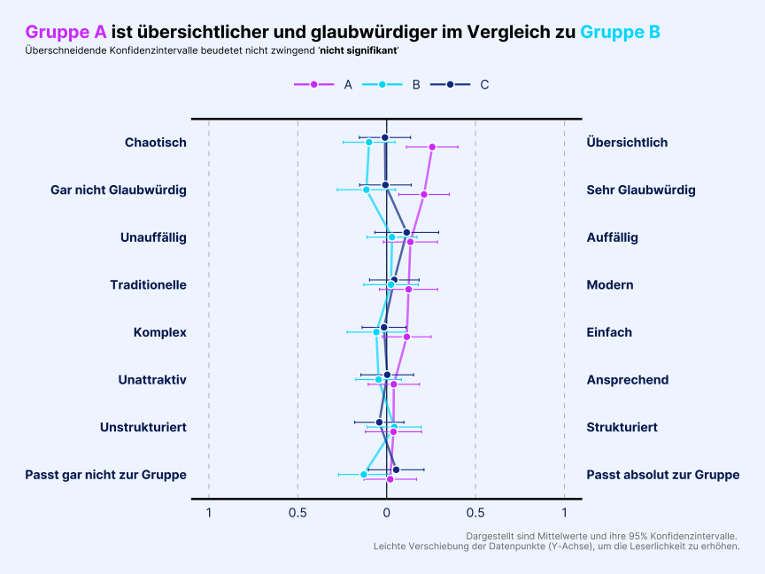
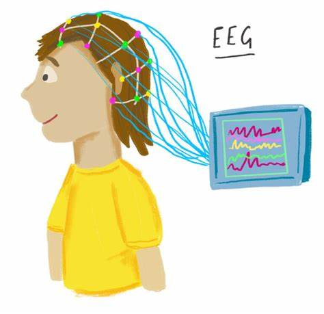
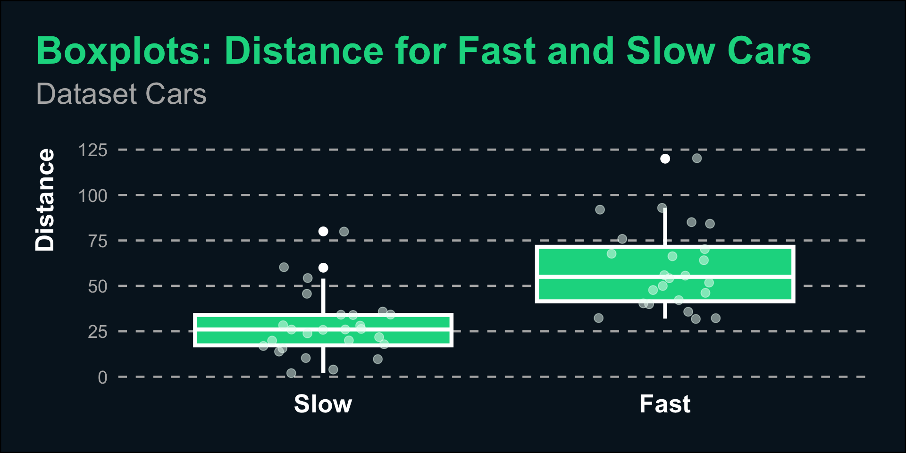
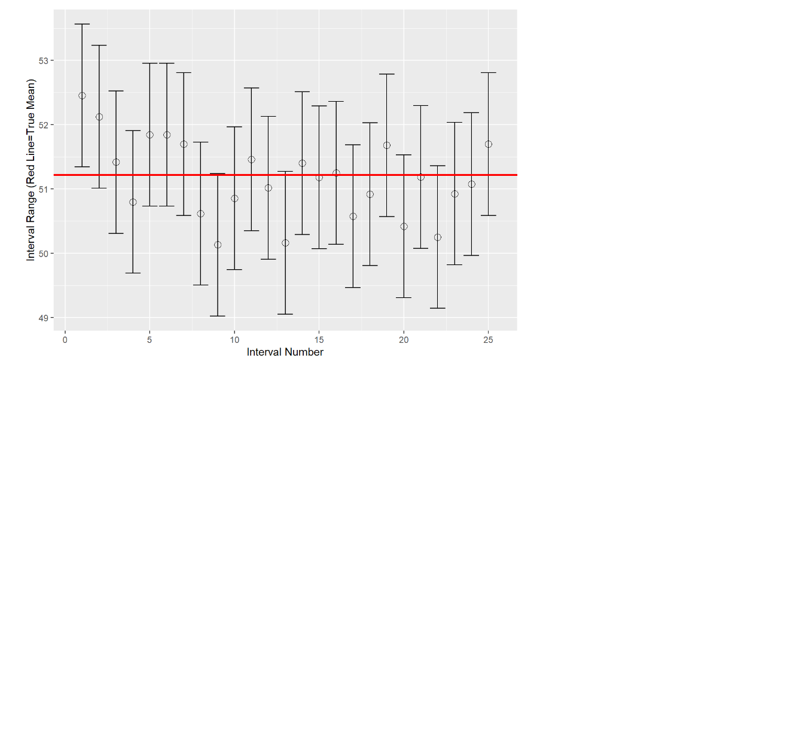
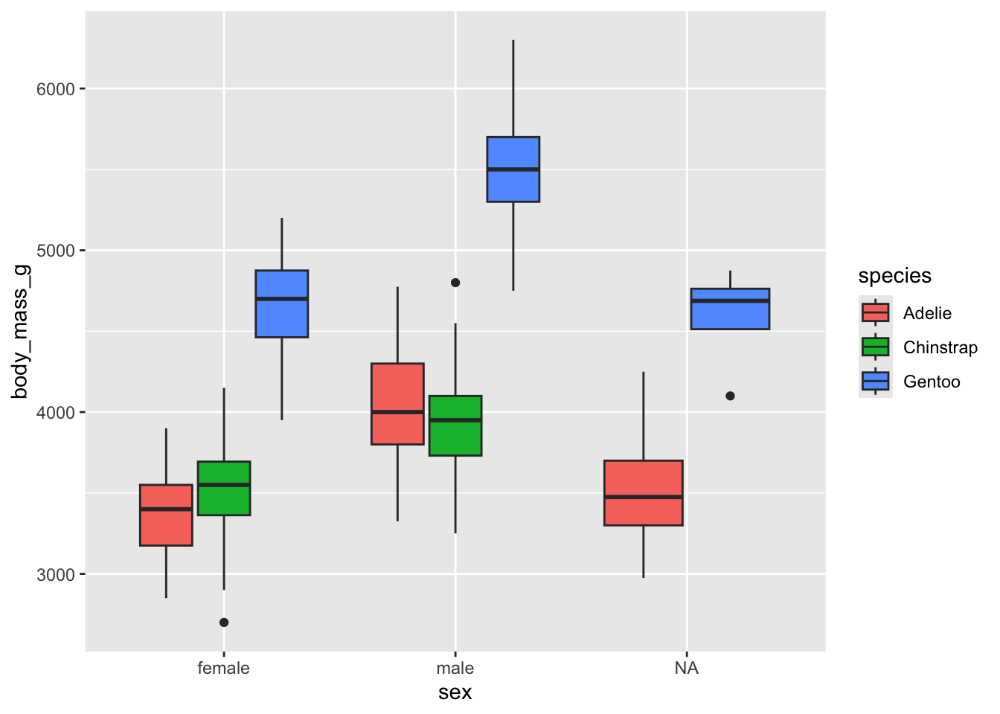

use_package()
Diverging Bar Plots for visualizing positive vs. negative opinions
A simple demonstration of how to use R, Revealjs and Echarts4r to create interactive Presentations. HTML file can be easily sent to other…

…

Experimenting with own themes

